Race Against Time
A mixed reality game that puts restoration and waste in the same room, to show the gap between what we hope for and what we do every day.
When
January 2025
Where
MIT Reality Hack, Boston
Team
Elle Zhou, Xuefei Wang, Zilu (Ruby) Wang, Andy Yu, Yiming (Danny) Huang
My role
Concept ideation and development, 3D assets, level design, quick prototyping
Awards
1st Place, Standing on the Shoulders of Sustainability
2nd Place, Best Use of STYLY
Tools
Blender, STYLY, Polycam, Unity, Meta MRUK

01 · Wood 木 · 生
Spark
The hackathon had a sustainability track, and at the time I was taking a class on sustainability, where I read Robin Wall Kimmerer’s idea of reciprocity between people and nature. It moved me, and I knew this was the direction I wanted to take.
XR can carry people into other worlds, so our first question was: what kind of world could help someone feel that reciprocity?
02 · Fire 火 · 长
Expand
We started big, imagining whole worlds built around restoring nature. Meanwhile, the research pointed to a gap: people know about environmental problems, but awareness rarely becomes action.
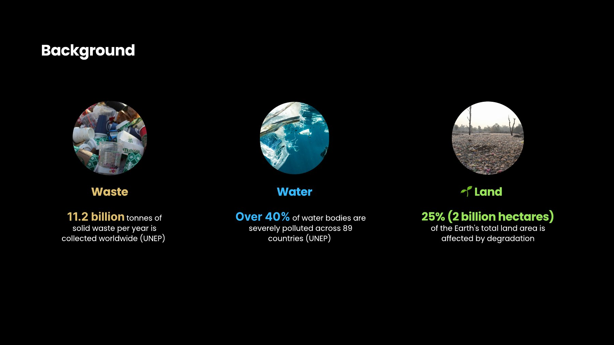
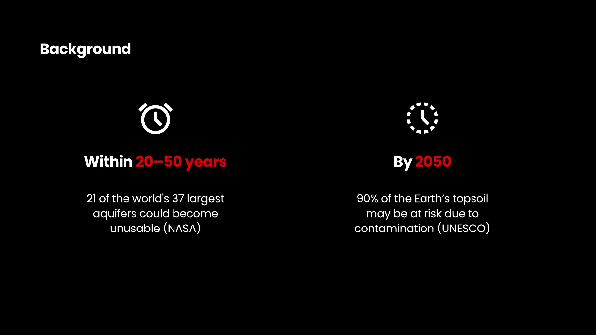
We focused on primary school students aged 6 to 12, with people of all ages as a secondary audience. But world-building at the scale we imagined turned out to be too complex, both conceptually and technically, for a hackathon.
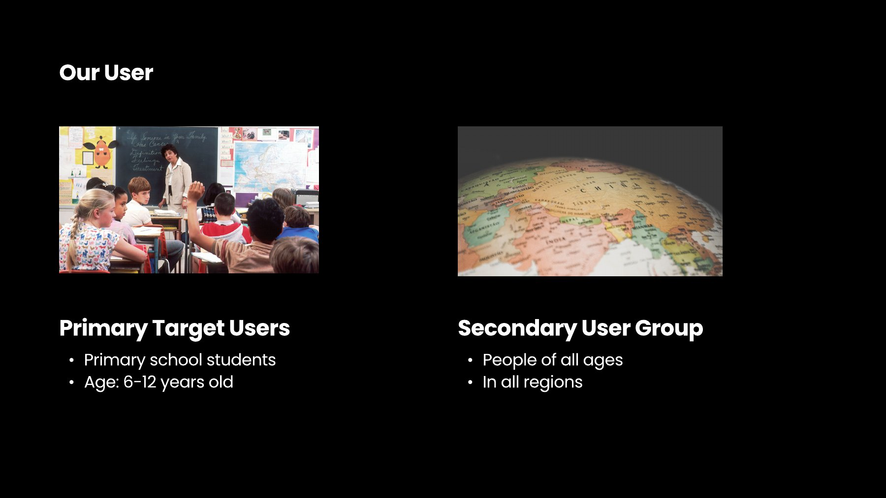
03 · Earth 土 · 化
Turn
My part: Concept ideation and development
When we stepped away from the concept to take a walk, we found trash everywhere inside the venue. However hard we tried to add a little more sustainability to the world, most people kept consuming and producing waste.
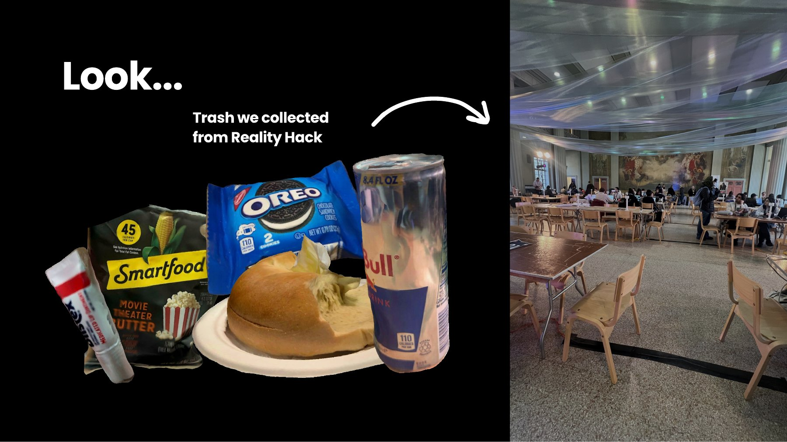
So we flipped the idea: instead of building another world, show the gap between vision and action, and point to everyday life as the real starting point of sustainability.
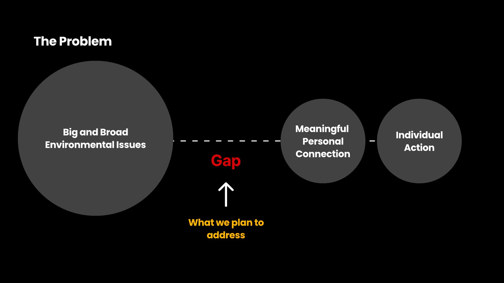
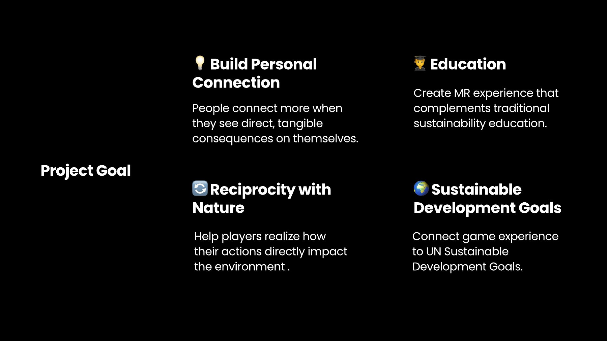
04 · Metal 金 · 收
Refine
My part: 3D assets, level design, and quick prototyping
One room, two worlds
I built the quick prototype in STYLY, using its built-in assets, as one room split in two. On the left, a restored environment with trees and clean water. On the right, the same room buried in trash. Seeing both at once was meant to be a sensory wake-up call, and to make the concept readable at a glance.
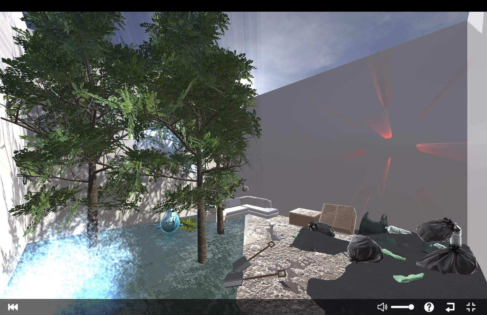
Refining meant keeping the models low-poly so the game could run smoothly in mixed reality, and keeping the link between concept and visuals straightforward.
From prototype to playable game
The team then built the mixed reality game in Unity for Meta Quest. Players collect water, plant and water five trees before the timer runs out, while trash keeps spilling into the room. For the final game, I also modeled the trees and the water baby character in Blender.
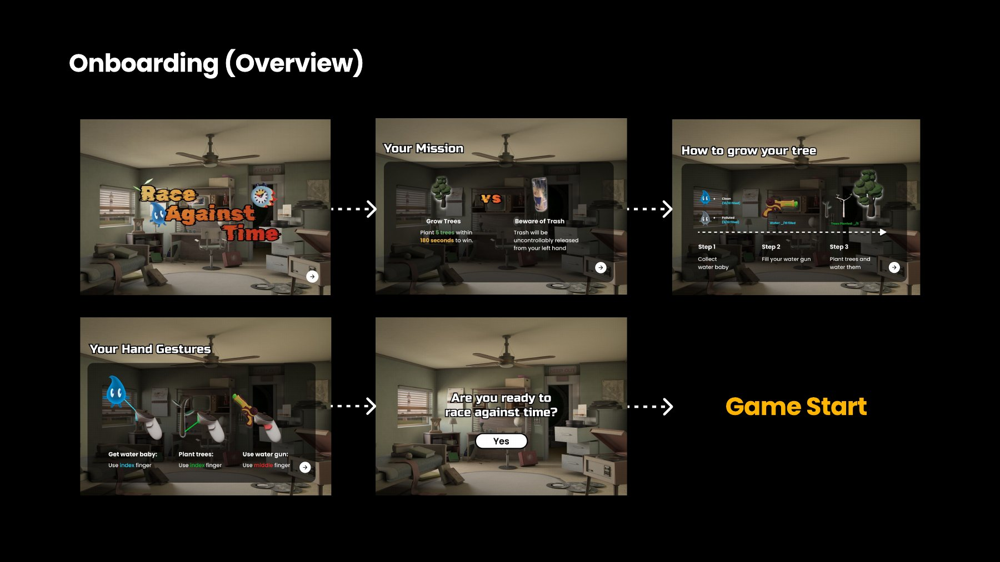
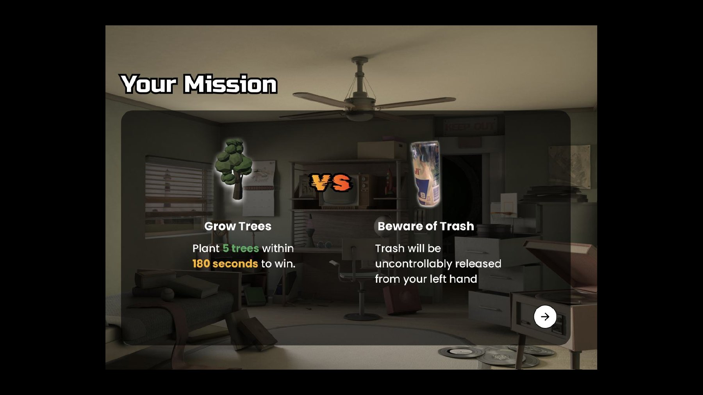
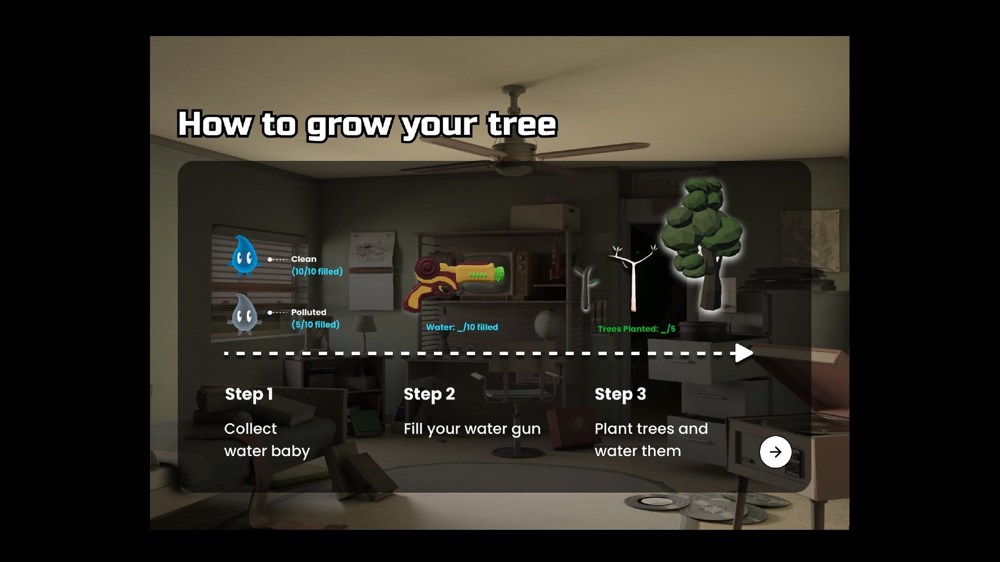
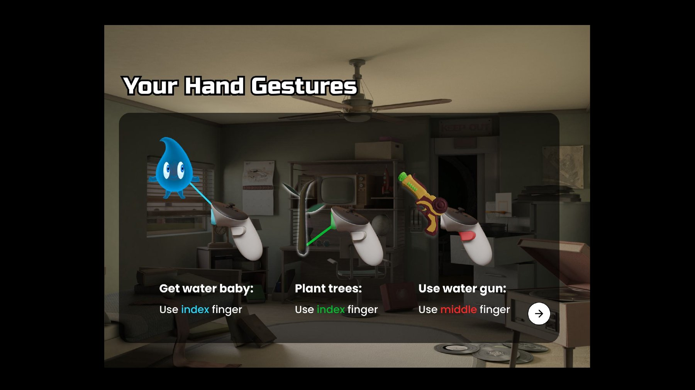
Design rationale
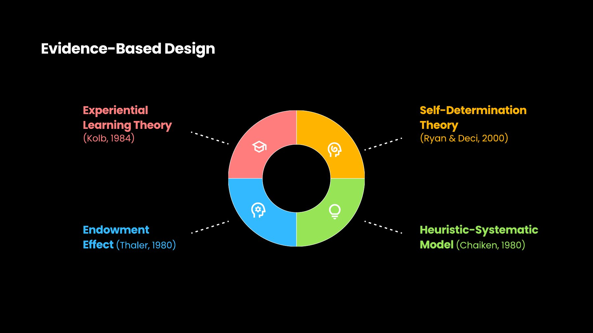
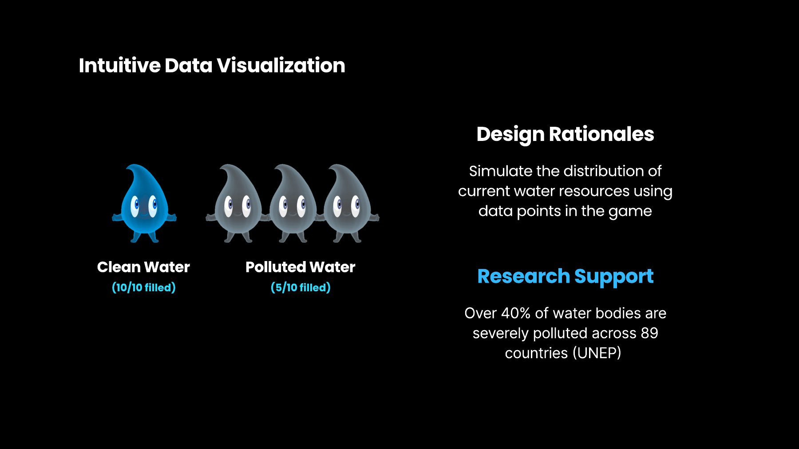
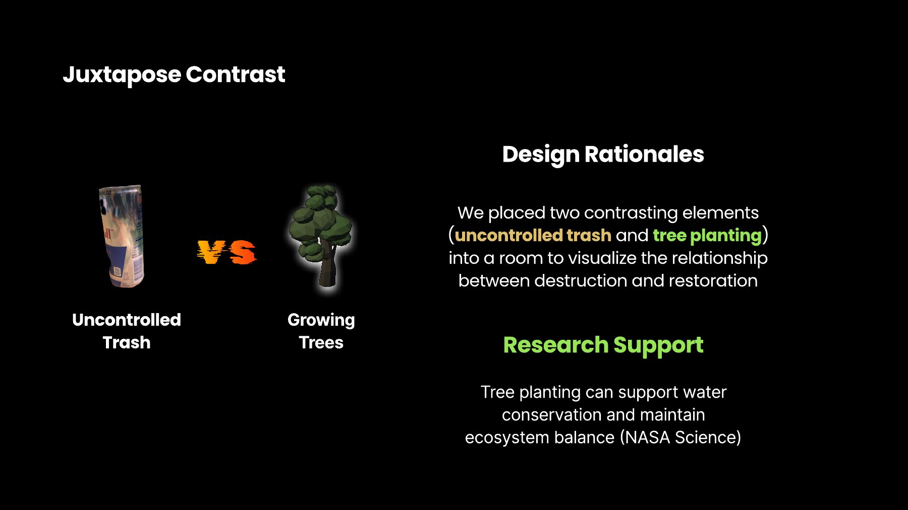
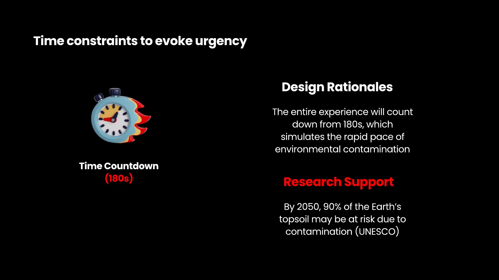
05 · Water 水 · 藏
Hold
Most of what I took away from Race Against Time was about how a team works under pressure.
Time
We spent too long on ideation, which left too little time to build the prototype.
Team coordination
Under tight deadlines, shared deliverables can easily fall between roles. Defining ownership early would have given our final presentation more room. Next time, I would set clear responsibilities and keep a shared task tracker from the start.